Graph Neural Network for GlueX forward calo data - Tutorial#
# %pip -q install uproot awkward torch-geometric scikit-learn safetensors tqdm > /dev/null
%pip install -q uproot awkward scikit-learn safetensors tqdm
%pip install -q torch-geometric
%pip install -q torch-scatter -f https://data.pyg.org/whl/torch-2.10.0+cu128.html
import torch
import torch_scatter
import torch_geometric
print(torch.__version__)
print(torch_scatter.__version__)
print("CUDA available:", torch.cuda.is_available())
print("CUDA:", torch.version.cuda)
2.10.0+cu128
2.1.2+pt210cu128
CUDA available: True
CUDA: 12.8
!uname -a
Linux 3d4f44b3b7e7 6.6.113+ #1 SMP Mon Feb 2 12:27:57 UTC 2026 x86_64 x86_64 x86_64 GNU/Linux
!nvidia-smi
Wed Mar 11 01:38:39 2026
+-----------------------------------------------------------------------------------------+
| NVIDIA-SMI 580.82.07 Driver Version: 580.82.07 CUDA Version: 13.0 |
+-----------------------------------------+------------------------+----------------------+
| GPU Name Persistence-M | Bus-Id Disp.A | Volatile Uncorr. ECC |
| Fan Temp Perf Pwr:Usage/Cap | Memory-Usage | GPU-Util Compute M. |
| | | MIG M. |
|=========================================+========================+======================|
| 0 Tesla T4 Off | 00000000:00:04.0 Off | 0 |
| N/A 48C P8 10W / 70W | 3MiB / 15360MiB | 0% Default |
| | | N/A |
+-----------------------------------------+------------------------+----------------------+
+-----------------------------------------------------------------------------------------+
| Processes: |
| GPU GI CI PID Type Process name GPU Memory |
| ID ID Usage |
|=========================================================================================|
| No running processes found |
+-----------------------------------------------------------------------------------------+
1. Data#
Download unformatted particle-gun ROOT (for GNN)#
import os
from urllib.parse import urlparse
import urllib.request
from tqdm import tqdm
class DownloadProgressBar(tqdm):
"""Custom TQDM progress bar for urllib downloads."""
def update_to(self, blocks=1, block_size=1, total_size=None):
"""
Update the progress bar.
Args:
blocks (int): Number of blocks transferred so far.
block_size (int): Size of each block (in bytes).
total_size (int, optional): Total size of the file (in bytes).
"""
if total_size is not None:
self.total = total_size
self.update(blocks * block_size - self.n)
def download(url, target_dir):
"""
Download a file from a URL into the target directory with progress display.
Args:
url (str): Direct URL to the file.
target_dir (str): Directory to save the file.
Returns:
str: Path to the downloaded (or existing) file.
"""
# Ensure the target directory exists
os.makedirs(target_dir, exist_ok=True) #do nothing if target_dir exists
# Infer the filename from the URL
filename = os.path.basename(urlparse(url).path) # parse the url (scheme, netloc, path) and take the name of the file
local_path = os.path.join(target_dir, filename)
# If file already exists, skip download
if os.path.exists(local_path):
print(f"\n✅ File already exists: {local_path}\n")
return local_path
# Download with progress bar
print(f"\n⬇️ Downloading {filename} from {url}\n")
with DownloadProgressBar(unit='B', unit_scale=True, miniters=1, desc=filename) as t: #miniters controls how frequently tqdm updates the bar
urllib.request.urlretrieve(url, filename=local_path, reporthook=t.update_to)
print(f"\n✅ Download complete: {local_path}\n")
return local_path
data_dir = "data"
unformatted_particle_data_url = "https://huggingface.co/datasets/AI4EIC/DNP2025-tutorial/resolve/main/unformatted_dataset/ParticleGunDataSet_800k.root"
data_dir = "data"
gun_root = download(unformatted_particle_data_url, data_dir)
✅ File already exists: data/ParticleGunDataSet_800k.root
Read ROOT arrays#
import uproot, awkward as ak, numpy as np
file = uproot.open(gun_root)
file.keys()
['FCALShowers;1']
tree = uproot.open(gun_root)["FCALShowers"]
tree.keys()
['index',
'thrownPID',
'thrownEnergy',
'thrownPosition_fX',
'thrownPosition_fY',
'thrownPosition_fZ',
'thrownMomentum_fX',
'thrownMomentum_fY',
'thrownMomentum_fZ',
'thrownMass',
'numBlocks',
'isNearBorder',
'showerE',
'showerPos_fX',
'showerPos_fY',
'showerPos_fZ',
'nrows',
'rows',
'ncols',
'cols',
'nenergies',
'energies',
'isSplitOff',
'isPhotonShower']
Explanation of these features can be found here: data preparation
branches = ["rows","cols","energies","showerE","thrownEnergy","numBlocks","isNearBorder","isSplitOff","isPhotonShower"]
arr = tree.arrays(branches, library="ak")
rows_ak, cols_ak, en_ak = arr["rows"], arr["cols"], arr["energies"]
showerE = ak.to_numpy(arr["showerE"]).astype(np.float32)
thrownE = ak.to_numpy(arr["thrownEnergy"]).astype(np.float32)
numBlocks = ak.to_numpy(arr["numBlocks"]).astype(np.int32)
isNearBorder = ak.to_numpy(arr["isNearBorder"]).astype(bool)
isSplit = ak.to_numpy(arr["isSplitOff"]).astype(bool)
isPhoton = ak.to_numpy(arr["isPhotonShower"]).astype(bool)
# Labels consistent with GNN: 1 photon, 0 splitOff
labels = np.where(isPhoton, 1, np.where(isSplit, 0, -1)).astype(np.int64)
# Keep only clean ones
keep = labels >= 0
keep_idx = np.where(keep)[0]
print("Total:", len(labels), "Kept:", len(keep_idx))
print("Photons:", np.sum(labels[keep_idx]==1), "SplitOffs:", np.sum(labels[keep_idx]==0))
Total: 814151 Kept: 814151
Photons: 434845 SplitOffs: 379306
Train/Val/Test Split#
from sklearn.model_selection import train_test_split
indices = keep_idx
y = labels[indices]
train_idx, temp_idx = train_test_split(indices, test_size=0.3, stratify=y, random_state=42)
val_idx, test_idx = train_test_split(temp_idx, test_size=0.5, stratify=labels[temp_idx], random_state=42)
# class counts (for weighting)
n_ph = np.sum(labels[train_idx] == 1)
n_so = np.sum(labels[train_idx] == 0)
counts = np.array([n_so, n_ph], dtype=np.float32) # [splitOff, photon]
counts
array([265514., 304391.], dtype=float32)
2. Graph Construction#
Graph Construction (all hits)#
Data Engineering
Typical pattern in a shower:
central blocks -> large energy
nearby blocks -> moderate
peripheral blocks -> very small
Consequently, if you feed raw energies directly into a neural network:
large values fominate gradients
tiny values become almost invisible
training could become unstable
We do a node-level energy transform
We are applying a non-linear compression of the energy scale
large energies -> compressed
small energies -> expanded
This could make the shape of the shower easier to learn. In calorimeter ML this is very common.
import matplotlib.pyplot as plt
# Flatten all crystal energies across all showers
all_E = ak.to_numpy(ak.flatten(en_ak))
# Plot histogram
plt.figure(figsize=(6,4))
plt.hist(all_E, bins=200)
plt.xlabel("Crystal energy (GeV)")
plt.ylabel("Counts")
plt.title("Distribution of individual FCAL crystal energies")
plt.yscale("log") # useful because distribution spans many orders
plt.show()
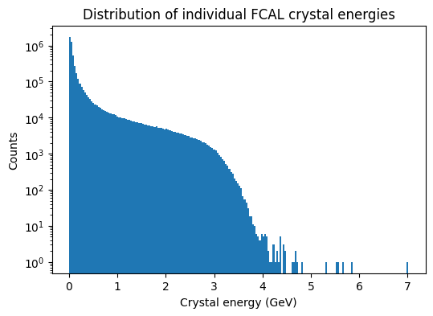
np.quantile(all_E, [0.9, 0.95, 0.99, 0.999])
array([0.53997727, 1.16369786, 2.37762243, 3.12767875])
import torch
from torch_geometric.data import Data
FCAL_GEOMETRY = (59, 59)
ENERGY_SCALE = 0.05 #
CLIP_MAX = 2.0 #
#############################################################################################################
# nodes = calorimeter blocks belonging to the shower
# edges = adjacency between neighboring blocks
# node features = per-block quantities like position and energy
# global graph features = shower-level quantities like total shower energy, number of blocks, and border flag
#############################################################################################################
def logE_norm(E, e0=ENERGY_SCALE, emax=CLIP_MAX, eps=1e-9):
E = np.clip(E.astype(np.float32, copy=False), 0.0, emax)
Z = np.log1p(E / np.float32(e0))
Z = Z / np.log1p(np.float32(emax) / np.float32(e0))
return np.clip(Z, 0.0, 1.0).astype(np.float32)
def build_edges_8n(rows, cols):
# creates a dictionary mapping grid position → node index.
# Later we want to ask: if crystal (r,c) has a neighbour at (r+1,c), which node is that?
idx = {(int(r), int(c)): i for i, (r, c) in enumerate(zip(rows, cols))}
neigh = [(-1,-1), (-1,0), (-1,1),
( 0,-1), ( 0,1),
( 1,-1), ( 1,0), ( 1,1)]
edges = []
for i, (r, c) in enumerate(zip(rows, cols)):
r = int(r); c = int(c)
for dr, dc in neigh:
j = idx.get((r+dr, c+dc), None)
if j is not None:
edges.append((i, j))
if len(edges) == 0:
return torch.empty((2, 0), dtype=torch.long) # returns 2 x E, where E are edges
return torch.tensor(edges, dtype=torch.long).t().contiguous() # returns 2 x E
# .contiguous forces PyTorch to copy the data into a new block of memory arranged in the correct order after transpose
#############################################################################################################
# the output of shower_to_graph is a torch_geometric.data.Data object representing one shower
#############################################################################################################
def shower_to_graph(rows, cols, energies, showerE, numBlocks, isNearBorder, eps=1e-9):
rows = np.asarray(rows, dtype=np.int64)
cols = np.asarray(cols, dtype=np.int64)
Eraw = np.asarray(energies, dtype=np.float32)
if len(Eraw) == 0:
return None
# Energy transform
E = logE_norm(Eraw)
Esum = float(Eraw.sum()) + eps # use raw sum for fractions
# Cluster "center of mass"
# --- In FCAL, rows and cols are indices of position on the calorimeter plane. We can compute energy-weighted indices:
row_c = float((rows * Eraw).sum() / Esum)
col_c = float((cols * Eraw).sum() / Esum)
# Relative coordinates: cluster shape
dx = (rows - row_c).astype(np.float32)
dy = (cols - col_c).astype(np.float32)
rr = np.sqrt(dx*dx + dy*dy).astype(np.float32)
# Normalize detector coordinates
# rows 0->58
# cols 0->58
row_n = (rows.astype(np.float32) / (FCAL_GEOMETRY[0]-1)) * 2 - 1 #[0,1]->[-1,1]
col_n = (cols.astype(np.float32) / (FCAL_GEOMETRY[1]-1)) * 2 - 1 #[0,1]->[-1,1]
Efrac = (Eraw / Esum).astype(np.float32)
logE = np.log(Eraw + eps).astype(np.float32)
# Node features
# [row_n, col_n, E_logscaled, logEraw, Efrac, dx, dy, r] --- they all are (N,)
x = np.stack([row_n, col_n, E, logE, Efrac, dx, dy, rr], axis=1).astype(np.float32) # --- returns (N, 8) where N: #crystals, 8: #features
x = torch.tensor(x, dtype=torch.float32)
edge_index = build_edges_8n(rows, cols)
data = Data(x=x, edge_index=edge_index) # defines data.x and data.edge_index
data.g = torch.tensor([float(showerE), float(numBlocks), float(isNearBorder)], dtype=torch.float32) #data.g is a custom attribute that stores graph-level (global) features for the shower
return data
# flatten energies
all_E = ak.to_numpy(ak.flatten(en_ak))
# apply your transform
Z = logE_norm(all_E)
plt.figure(figsize=(6,5))
plt.scatter(all_E, Z, s=1, alpha=0.1)
plt.xlabel("Raw crystal energy (GeV)")
plt.ylabel("Transformed energy z(E)")
plt.title("Energy transform used for GNN input")
plt.xlim(0,5)
plt.ylim(0,1.05)
plt.show()
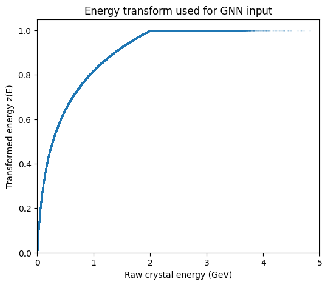
Visualize Graphs#
def plot_shower_nodes(rows, cols, energies=None, title="Shower nodes"):
rows = np.asarray(rows)
cols = np.asarray(cols)
plt.figure(figsize=(6, 6))
if energies is None:
plt.scatter(cols, rows, s=80)
else:
sc = plt.scatter(cols, rows, c=energies, s=120)
plt.colorbar(sc, label="Crystal energy")
plt.gca().invert_yaxis() # optional, often nicer for detector grids
plt.xlabel("col")
plt.ylabel("row")
plt.title(title)
plt.grid(True, alpha=0.3)
plt.axis("equal")
plt.show()
i = keep_idx[7879]
plot_shower_nodes(rows_ak[i], cols_ak[i], en_ak[i], title="FCAL shower nodes")
print(labels[i])
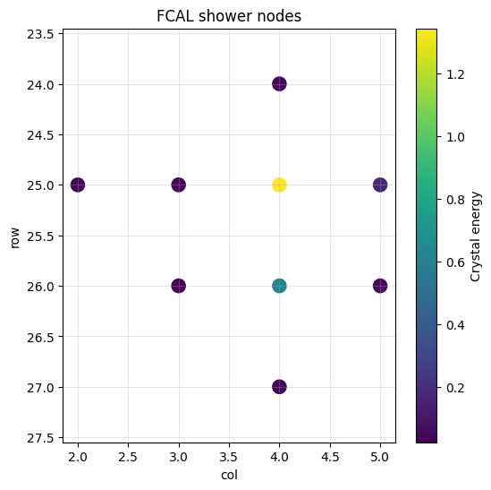
1
Dataset + DataLoader#
from torch.utils.data import Dataset
from torch_geometric.loader import DataLoader
class FCALGraphDataset(Dataset):
def __init__(self, idx_list):
self.idx = np.asarray(idx_list, dtype=np.int64)
def __len__(self):
return len(self.idx)
def __getitem__(self, i):
j = int(self.idx[i])
rows = ak.to_numpy(rows_ak[j])
cols = ak.to_numpy(cols_ak[j])
ens = ak.to_numpy(en_ak[j])
data = shower_to_graph(rows, cols, ens,
showerE=showerE[j],
numBlocks=numBlocks[j],
isNearBorder=isNearBorder[j])
y = labels[j] # 0/1
data.y = torch.tensor([y], dtype=torch.long)
# IMPORTANT: make graph-level features 2D so they batch correctly
data.g = torch.tensor([[float(showerE[j]),
float(numBlocks[j]),
float(isNearBorder[j])]], dtype=torch.float32)
# Optional metadata (also 2D is fine; 1D works, but keep consistent)
data.showerE = torch.tensor([float(showerE[j])], dtype=torch.float32)
data.thrownE = torch.tensor([float(thrownE[j])], dtype=torch.float32)
return data
BATCH_SIZE = 512
train_loader = DataLoader(FCALGraphDataset(train_idx), batch_size=BATCH_SIZE, shuffle=True)
val_loader = DataLoader(FCALGraphDataset(val_idx), batch_size=BATCH_SIZE, shuffle=False)
test_loader = DataLoader(FCALGraphDataset(test_idx), batch_size=BATCH_SIZE, shuffle=False)
it = iter(train_loader)
batch1 = next(it)
print(batch1)
batch2 = next(it)
print(batch2)
DataBatch(x=[3153, 8], edge_index=[2, 11220], g=[512, 3], y=[512], showerE=[512], thrownE=[512], batch=[3153], ptr=[513])
DataBatch(x=[3168, 8], edge_index=[2, 11304], g=[512, 3], y=[512], showerE=[512], thrownE=[512], batch=[3168], ptr=[513])
Notes:
ptris a pointer array automatically created by the PyTorch Geometric DataLoader. It tells you where each graph starts and ends in the concatenated node list.Formally,
ptr.shape = batch_size + 1
batch2.ptr
tensor([ 0, 10, 14, 27, 29, 41, 53, 57, 67, 78, 81, 84,
88, 100, 104, 108, 115, 123, 128, 130, 135, 141, 144, 147,
151, 156, 160, 165, 176, 180, 184, 187, 195, 197, 203, 213,
215, 221, 227, 232, 239, 245, 253, 264, 267, 274, 280, 283,
285, 296, 304, 307, 314, 321, 324, 327, 333, 340, 344, 350,
354, 362, 366, 371, 374, 378, 381, 383, 389, 398, 402, 407,
410, 412, 415, 417, 428, 439, 444, 451, 455, 462, 464, 467,
470, 482, 487, 490, 493, 499, 504, 510, 516, 522, 525, 532,
537, 549, 553, 558, 562, 564, 570, 582, 587, 597, 600, 603,
613, 618, 628, 631, 642, 656, 660, 667, 669, 678, 687, 691,
701, 704, 714, 719, 722, 732, 736, 739, 748, 754, 758, 762,
766, 777, 780, 790, 793, 798, 803, 810, 814, 824, 828, 835,
839, 842, 844, 848, 856, 863, 870, 877, 886, 890, 901, 908,
910, 919, 922, 930, 942, 950, 956, 960, 964, 972, 983, 986,
996, 1007, 1010, 1012, 1015, 1019, 1026, 1032, 1035, 1043, 1050, 1053,
1059, 1068, 1073, 1078, 1090, 1096, 1103, 1109, 1117, 1129, 1139, 1141,
1154, 1159, 1164, 1168, 1182, 1191, 1193, 1202, 1208, 1212, 1217, 1224,
1226, 1237, 1243, 1247, 1255, 1257, 1261, 1265, 1268, 1272, 1280, 1283,
1291, 1301, 1307, 1310, 1319, 1322, 1329, 1332, 1334, 1339, 1344, 1346,
1352, 1357, 1364, 1375, 1381, 1388, 1400, 1410, 1417, 1423, 1432, 1437,
1440, 1453, 1462, 1475, 1482, 1484, 1487, 1491, 1497, 1500, 1505, 1515,
1525, 1529, 1540, 1546, 1549, 1552, 1561, 1564, 1571, 1577, 1580, 1592,
1601, 1610, 1613, 1619, 1630, 1633, 1645, 1649, 1654, 1657, 1662, 1673,
1675, 1687, 1700, 1703, 1712, 1716, 1723, 1734, 1742, 1751, 1762, 1769,
1777, 1780, 1792, 1795, 1798, 1809, 1816, 1827, 1831, 1840, 1850, 1853,
1863, 1866, 1871, 1877, 1886, 1897, 1900, 1912, 1923, 1926, 1938, 1940,
1943, 1947, 1956, 1967, 1969, 1977, 1989, 2001, 2007, 2017, 2019, 2021,
2025, 2032, 2034, 2043, 2046, 2051, 2054, 2065, 2068, 2071, 2081, 2090,
2100, 2103, 2105, 2109, 2114, 2116, 2118, 2128, 2132, 2141, 2144, 2152,
2162, 2168, 2173, 2177, 2183, 2186, 2189, 2196, 2206, 2212, 2214, 2222,
2232, 2239, 2244, 2251, 2256, 2262, 2265, 2271, 2276, 2284, 2287, 2290,
2296, 2298, 2304, 2309, 2313, 2325, 2334, 2336, 2338, 2345, 2350, 2354,
2361, 2372, 2377, 2380, 2385, 2392, 2395, 2408, 2419, 2429, 2431, 2442,
2454, 2468, 2473, 2477, 2486, 2491, 2494, 2498, 2507, 2516, 2528, 2536,
2540, 2544, 2546, 2550, 2557, 2566, 2575, 2579, 2589, 2592, 2599, 2603,
2607, 2617, 2619, 2629, 2638, 2640, 2646, 2657, 2663, 2665, 2672, 2682,
2687, 2697, 2701, 2704, 2711, 2714, 2724, 2729, 2733, 2742, 2753, 2762,
2769, 2775, 2787, 2790, 2801, 2806, 2811, 2818, 2825, 2832, 2844, 2851,
2857, 2861, 2865, 2870, 2873, 2876, 2880, 2883, 2891, 2898, 2900, 2904,
2907, 2909, 2912, 2915, 2919, 2930, 2937, 2949, 2954, 2965, 2975, 2983,
2994, 2998, 3001, 3005, 3016, 3027, 3037, 3043, 3045, 3049, 3051, 3054,
3061, 3064, 3068, 3072, 3075, 3078, 3080, 3085, 3098, 3109, 3113, 3117,
3119, 3121, 3129, 3133, 3143, 3150, 3160, 3166, 3168])
Convert a PyG graph to NetworkX and plot
from torch_geometric.utils import to_networkx
import networkx as nx
# take a single shower
i = keep_idx[7879]
rows = np.asarray(rows_ak[i])
cols = np.asarray(cols_ak[i])
ens = np.asarray(en_ak[i])
data = shower_to_graph(rows, cols, ens,
showerE=showerE[i],
numBlocks=numBlocks[i],
isNearBorder=isNearBorder[i])
# convert to networkx
G = to_networkx(data, to_undirected=True)
Use detector coordinates for layout
pos = {i: (cols[i], rows[i]) for i in range(len(rows))}
plt.figure(figsize=(6,6))
nx.draw(
G,
pos=pos,
node_size=220,
node_color=ens,
cmap="plasma",
with_labels=True
)
plt.gca().invert_yaxis()
plt.title("FCAL Shower Graph")
plt.show()
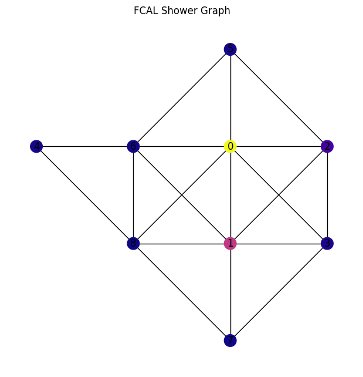
3. GNN Model#
To-do list
Explain GNN — link to slides?
Explain — Explain SAGEConv and link to other types of graph neural networks
GNN Model (graph classifier)#
################################################################################
# MODEL DESCRIPTION #
################################################################################
# 1. crystals start with 8 handcrafted node features #
# 2. GraphSAGE updates each crystal using neighboring crystals #
# 3. after 3 layers, each crystal embedding reflects local shower structure #
# 4. node embeddings are pooled into one vector representing the whole shower #
# 5. that vector is combined with global shower metadata #
# 6. final MLP predicts whether the shower is photon or split-off #
################################################################################
import torch.nn as nn
import torch.nn.functional as F
from torch_geometric.nn import SAGEConv, global_mean_pool, global_max_pool
# (crystal/node features) x_i = [row_n, col_n, E, logE, Efrac, dx, dy, rr]
# (shower/graph features) [showerE, numBlocks, isNearBorder]
class SmallGNN(nn.Module):
def __init__(self, node_in=8, g_in=3, hidden=64, n_classes=2, dropout=0.1):
# node_in : number of input features per node (here 8 crystal features)
# g_in : number of graph-level features (here 3 shower-level quantities in data.g)
# hidden : size of the node embedding produced by the GNN layers
# n_classes : number of output classes (photon vs split-off)
# dropout : dropout probability used in the classification head
super().__init__()
# calls the constructor of the parent class (nn.Module)
# this registers the model with PyTorch so parameters, layers,
# and gradients are properly tracked during training
# GraphSAGE layers (message passing between neighboring crystals)
# N = total number of nodes in the batch
self.conv1 = SAGEConv(node_in, 64) # (N, node_in=8) -> (N, 64)
# each node updates its features by aggregating information from its neighbors
self.conv2 = SAGEConv(64, 64) # (N, 64) -> (N, 64)
# deeper layer: node embeddings now encode information from a larger neighborhood
self.conv3 = SAGEConv(64, hidden) # (N, 64) -> (N, hidden)
# final node embeddings used for graph-level pooling
self.head = nn.Sequential(
nn.Linear(2*hidden + g_in, 128),
nn.ReLU(),
nn.Dropout(dropout),
nn.Linear(128, n_classes)
)
def forward(self, data):
# data.batch tells which graph each node belongs to. Its dimension, B, coincides with the total number of nodes in the batch, Ntot
# x: (Ntot, 8); ei: (2, Etot); b: (Ntot,)
x, ei, b = data.x, data.edge_index, data.batch
#############################################################################
# Node embedding stage:
# start from crystal-level node features (8 per crystal)
# each SAGEConv layer updates a crystal representation by combining
# its own features with features aggregated from neighboring crystals
# (defined by the graph edges)
#############################################################################
x = F.relu(self.conv1(x, ei)) # (Ntot, node_in=8) -> (Ntot, 64)
x = F.relu(self.conv2(x, ei)) # (Ntot, 64) -> (Ntot, 64)
x = F.relu(self.conv3(x, ei)) # (Ntot, 64) -> (Ntot, hidden)
#############################################################################
# pool all node embeddings into one-grap-level embedding for the whole shower
#############################################################################
# B: number of graphs/showers in the batch
pooled = torch.cat([global_mean_pool(x, b), global_max_pool(x, b)], dim=1)
# (Ntot x hidden) -> (B x 2*hidden)
out = self.head(torch.cat([pooled, data.g], dim=1))
# (B x 2*hidden) + (B x 3) -> (B x (2*hidden + 3)) -> head -> (B x 2)
return out
Evaluate + Train#
Returns y_true, y_prob where y_prob=P(photon) or P(splitoff) depending on the convention.
We consider here
label 1 = photon
label 0 = splitoff
y_prob = P(photon)
import os, math
from tqdm.auto import tqdm, trange
from sklearn.metrics import roc_auc_score
from contextlib import nullcontext
from safetensors.torch import save_model
DEVICE = "cuda" if torch.cuda.is_available() else "cpu"
USE_AMP = (DEVICE == "cuda")
################################################################################
@torch.inference_mode() # disables gradient tracking and autograd
def evaluate_gnn(model, loader, desc="Eval", returnShowerE=False, returnThrownE=False):
# switches the network to evaluation mode and turns off training behaviors
model.eval().to(DEVICE)
# true labels, predicted photon probs, reco shower energy, true thrown energy
ys, ps, shE, thE = [], [], [], []
correct = total = 0
bar = tqdm(loader, desc=desc, leave=False)
for batch in bar:
batch = batch.to(DEVICE)
logits = model(batch) # [B,2] row: batch of showers, col: classes
prob_photon = torch.softmax(logits, dim=1)[:, 1] # P(photon) sliced as 1D tensor by [:,1]
pred = logits.argmax(dim=1) # returns index of largest value: 0 split-off, 1 photon
yb = batch.y.view(-1) # take true class label, flattened as 1D vector
ys.append(yb.cpu().numpy())
ps.append(prob_photon.cpu().numpy())
shE.append(batch.showerE.view(-1).cpu().numpy())
thE.append(batch.thrownE.view(-1).cpu().numpy())
correct += (pred == yb).sum().item()
total += yb.numel()
bar.set_postfix(acc=f"{(correct/max(1,total)):.3f}") # show running accuracy in the progress bar
y_true = np.concatenate(ys) if ys else np.array([]) # stitching into one long array
y_prob = np.concatenate(ps) if ps else np.array([])
showerE_out = np.concatenate(shE) if shE else np.array([])
thrownE_out = np.concatenate(thE) if thE else np.array([])
acc = correct / max(1, total)
auc = roc_auc_score(y_true, y_prob) if y_true.size and np.unique(y_true).size > 1 else float("nan")
if returnShowerE:
return acc, auc, y_true, y_prob, showerE_out
if returnThrownE:
return acc, auc, y_true, y_prob, thrownE_out
return acc, auc, y_true, y_prob
################################################################################
def train_gnn(model, opt, train_loader, val_loader, save_path="./models", counts=counts, epochs=20):
#---------------------------------------------------------------------------
# Parameters
# ----------
# model: your SmallGNN model
# opt: optimizer (e.g. Adam)
# train_loader: training DataLoader - Yields mini-batches of training graphs.
# val_loader: validation DataLoader - Yields mini-batches of validation graphs.
# save_path: where the trained model will be saved
# counts: array-like, shape (n_classes,) # of training examples in each class.
# counts[0] = number of split-off showers
# counts[1] = number of photon showers
# epochs: number of training passes over the dataset
# Returns
# -------
# model : nn.Module
# The model restored to the best validation AUC seen during training.
#---------------------------------------------------------------------------
os.makedirs(save_path, exist_ok=True)
# -------------------------------------------------------------------------
# Build class weights for the loss function.
#
# counts.sum() = total number of samples across classes.
# counts + 1e-6 avoids division by zero if a class were empty.
#
# This produces one weight per class: w_c = total_count / count_c
#
# Rarer classes get a larger weight. This helps when the dataset is imbalanced.
# -------------------------------------------------------------------------
w = torch.tensor(
(counts.sum() / (counts + 1e-6)),
dtype=torch.float32,
device=DEVICE,
)
# Weighted cross-entropy loss.
# The weight used for a sample depends on its true class.
# For binary classification with labels 0/1:
# weight[0] is used for class 0 samples
# weight[1] is used for class 1 samples
crit = nn.CrossEntropyLoss(weight=w)
# -------------------------------------------------------------------------
# Automatic Mixed Precision (AMP) support.
#
# USE_AMP is True only when training on CUDA in this notebook.
#
# GradScaler is used only with float16 mixed precision on GPU.
# It scales the loss before backpropagation so tiny gradients do not
# underflow to zero in float16. If AMP is not used, scaler is simply None.
# -------------------------------------------------------------------------
scaler = torch.amp.GradScaler('cuda') if USE_AMP else None
# Move the model parameters to the selected device (GPU or CPU).
model.to(DEVICE)
# -------------------------------------------------------------------------
# Early-stopping bookkeeping.
#
# best_auc : best validation AUC seen so far
# best_state : frozen copy of the model parameters at best_auc
# patience : stop after this many consecutive non-improving epochs
# no_improv : number of consecutive epochs without improvement
# -------------------------------------------------------------------------
best_auc, best_state, patience, no_improv = -1.0, None, 5, 0
# Main epoch loop.
# trange(...) is just tqdm(range(...)) with a progress bar.
for epoch in trange(1, epochs+1, desc="Training"):
# Put the model in training mode.
# This matters for layers like Dropout and BatchNorm.
model.train()
# Running statistics for the current epoch.
# running : sum of per-sample losses over the epoch
# seen : number of graphs processed so far in this epoch
# correct : number of correctly classified graphs so far
running = 0.0
seen = 0
correct = 0
# Wrap the train_loader in a tqdm progress bar.
# bar now iterates over the same batches as train_loader with a live progress bar and dynamic text updates.
bar = tqdm(
train_loader,
desc=f"Epoch {epoch}/{epochs} (train)",
leave=False,
)
bar = tqdm(train_loader, desc=f"Epoch {epoch}/{epochs} (train)", leave=False) ## does now bar control train_loader, i.e., one can loop batches in bar?
# ---------------------------------------------------------------------
# Mini-batch training loop
# ---------------------------------------------------------------------
for batch in bar:
# Move the entire batched graph object to the selected device.
# This moves data.x, data.edge_index, data.y, data.g, etc.
batch = batch.to(DEVICE)
# batch.y stores one label per graph.
# view(-1) reshapes it into a flat 1D tensor of shape (B,) where B is the number of graphs in this batch.
yb = batch.y.view(-1)
# Reset gradients from the previous optimization step.
# set_to_none=True is a slightly more memory-efficient / faster way than filling old gradients with zeros.
opt.zero_grad(set_to_none=True)
# -----------------------------------------------------------------
# Build the precision context.
#
# If AMP is enabled: use autocast so many ops run in float16 on CUDA
# If AMP is disabled: use nullcontext(), i.e. do nothing special
# -----------------------------------------------------------------
ctx = torch.amp.autocast(device_type='cuda', dtype=torch.float16) if USE_AMP else nullcontext()
# "with ctx:" enters that context manager
# If ctx is autocast(...): operations inside the block run in mixed precision where safe
# If ctx is nullcontext(): the block runs normally
# The point of using "with" is that only this block is affected,
# and once we exit the block, precision behavior returns to normal.
with ctx:
# Forward pass: model outputs logits of shape (B, n_classes).
logits = model(batch)
# Compute weighted cross-entropy loss against the true labels.
loss = crit(logits, yb)
# -----------------------------------------------------------------
# Backpropagation + optimizer step
# -----------------------------------------------------------------
if USE_AMP:
# Scale the loss to protect small gradients in float16.
scaler.scale(loss).backward()
# Perform the optimizer step using the scaled/unscaled gradients.
scaler.step(opt)
# Update the internal scaling factor for the next iteration.
# The scaler dynamically adapts:
# - if gradients are safe, it may increase the scale
# - if overflow is detected, it may reduce the scale
scaler.update()
else:
# Standard float32 training path.
loss.backward()
opt.step() ## why no updated as before?
# -----------------------------------------------------------------
# Accumulate training metrics for this epoch
# -----------------------------------------------------------------
# loss.item() is typically the mean loss over the current batch.
#
# To compute the true epoch-average loss, we multiply by batch size
# to convert the batch mean loss into the batch sum loss, then later
# divide by the total number of samples seen.
running += float(loss.item()) * yb.size(0)
# Number of graphs processed so far in this epoch.
seen += yb.size(0)
# logits.argmax(1):
# argmax over class dimension (dim=1)
# gives the predicted class index for each graph in the batch
#
# If logits has shape (B, 2), then logits.argmax(1) has shape (B,)
# and contains 0 or 1 for each graph.
correct += (logits.argmax(1) == yb).sum().item()
# Update the live progress-bar text with running averages.
bar.set_postfix(avg_loss=f"{running/max(1,seen):.4f}", acc=f"{(correct/max(1,seen)):.3f}")
# Average training loss over the full epoch.
train_loss = running / max(1, seen)
# Evaluate on the validation set.
# evaluate_gnn returns: val_acc, val_auc, y_true, y_prob
val_acc, val_auc, _, _ = evaluate_gnn(model, val_loader, desc=f"Epoch {epoch}/{epochs} (val)")
tqdm.write(f"Epoch {epoch:02d} | train_loss {train_loss:.4f} | val_acc {val_acc:.4f} | val_auc {val_auc:.4f}")
# If AUC is NaN, replace it by 0.0 for comparison purposes.
score = 0.0 if math.isnan(val_auc) else val_auc
# ---------------------------------------------------------------------
# Check whether this epoch improved the validation score
# ---------------------------------------------------------------------
if score > best_auc:
# Improvement found: update best score and reset bad-epoch counter.
best_auc = score
no_improv = 0
# Save a frozen snapshot of the model weights.
#
# model.state_dict().items() gives (name, tensor) pairs.
#
# For each tensor v:
# detach() : remove gradient history / autograd tracking
# cpu() : move to CPU memory so it is safely stored there
# clone() : make an independent copy of the tensor data
#
best_state = {k: v.detach().cpu().clone() for k,v in model.state_dict().items()} ## when do detach? ## why clone? ## I do not understand this
# if you do best_state = model.state_dict(), the best_state would be the same tensors used by the model during training.
# A deep copy creates a new object with new memory. The copied tensory point to a different memory block.
# PyTorch tracks operations in a computation graph so gradients can be computed. .detach() creates a tensor that: shares the same values but has no gradient history
# .detach().cpu().clone() together allows a frozen snapshot of model weights independent of training, stored safely in CPU memory
tqdm.write(f"✓ New best AUC {best_auc:.4f}")
save_model(model, os.path.join(save_path, "FCAL_GNN_Classifier.safetensors"))
else:
# No improvement this epoch.
no_improv += 1
# If we have gone too many epochs without improvement, stop early.
if no_improv >= patience:
tqdm.write("Early stopping.")
break
# After training ends, restore the best weights we saw during validation.
if best_state is not None:
model.load_state_dict(best_state)
return model
Run Training#
EPOCHS = 2
LR = 3e-4
model = SmallGNN().to(torch.float32) # forces all model parameters and buffers to use the float32 datatype.
# Adaptive Moment Estimation (Adam) + weight decay regularization
opt = torch.optim.AdamW(model.parameters(), lr=LR)
model = train_gnn(model, opt, train_loader, val_loader, save_path="./models", epochs=EPOCHS)
Epoch 01 | train_loss 0.2198 | val_acc 0.9251 | val_auc 0.9770
✓ New best AUC 0.9770
Epoch 02 | train_loss 0.1886 | val_acc 0.9275 | val_auc 0.9784
✓ New best AUC 0.9784
4. Performance#
Evaluate Performance#
from sklearn.metrics import confusion_matrix
import seaborn as sns, matplotlib.pyplot as plt
test_acc, test_auc, y_true, y_prob = evaluate_gnn(model, test_loader, desc="Test")
cm = confusion_matrix(y_true, (y_prob >= 0.5).astype(int), labels=[0,1])
print(f"Test | acc {test_acc:.4f} | auc {test_auc:.4f}")
sns.heatmap(cm, annot=True, fmt="d", cmap="Blues",
xticklabels=["SplitOff","Photon"], yticklabels=["SplitOff","Photon"])
plt.show()
Test | acc 0.9267 | auc 0.9789
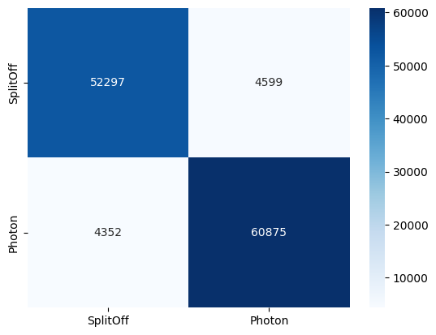
############################################################
# Reference values from https://arxiv.org/pdf/2002.09530
# 85% signal with 60% background rejection
############################################################
# --- Photon efficiency vs split-off rejection utilities (GNN convention) ---
import numpy as np
from sklearn.metrics import roc_curve, confusion_matrix
# GNN convention
# y_true: 0 = SplitOff (background), 1 = Photon (signal)
# y_prob: P(Photon)
def eff_rej_at_threshold(y_true, y_prob, thr):
y_true = np.asarray(y_true).astype(int)
y_prob = np.asarray(y_prob)
# classify photon if probability >= threshold
y_pred = (y_prob >= thr).astype(int)
Nsig = np.sum(y_true == 1)
Nbkg = np.sum(y_true == 0)
eps_sig = np.sum((y_true == 1) & (y_pred == 1)) / max(1, Nsig)
rej_bkg = np.sum((y_true == 0) & (y_pred == 0)) / max(1, Nbkg)
cm = confusion_matrix(y_true, y_pred, labels=[0,1])
return eps_sig, rej_bkg, cm
def eff_rej_curve(y_true, y_prob):
# positive class = photon
fpr, tpr, thrs = roc_curve(y_true, y_prob, pos_label=1)
eps_sig = tpr # photon efficiency
rej_bkg = 1 - fpr # split-off rejection
return eps_sig, rej_bkg, thrs
# --- Compute performance curve ---
eps_sig, rej_bkg, thrs = eff_rej_curve(y_true, y_prob)
# --- Working point: photon efficiency ≈ 0.85 ---
target_eps = 0.85
i = int(np.argmin(np.abs(eps_sig - target_eps)))
thr_star = thrs[i]
eps_star, rej_star, cm_star = eff_rej_at_threshold(y_true, y_prob, thr_star)
print(f"Working point (ε_sig≈{target_eps:.2f})")
print(f"threshold = {thr_star:.4f}")
print(f"Photon efficiency = {eps_star:.4f}")
print(f"Split-off rejection = {rej_star:.4f}")
print("\nConfusion matrix")
print("(rows=true, cols=pred)")
print("0=SplitOff, 1=Photon")
print(cm_star)
# --- Performance at default threshold 0.5 ---
eps_05, rej_05, cm_05 = eff_rej_at_threshold(y_true, y_prob, 0.5)
print(f"\nAt threshold 0.5")
print(f"Photon efficiency = {eps_05:.4f}")
print(f"Split-off rejection = {rej_05:.4f}")
Working point (ε_sig≈0.85)
threshold = 0.8326
Photon efficiency = 0.8500
Split-off rejection = 0.9702
Confusion matrix
(rows=true, cols=pred)
0=SplitOff, 1=Photon
[[55198 1698]
[ 9783 55444]]
At threshold 0.5
Photon efficiency = 0.9333
Split-off rejection = 0.9192
Figure of Merit Definitions#
When optimizing a binary classifier in the presence of signal and background, the optimal threshold is often chosen by maximizing a Figure of Merit (FoM) that balances signal efficiency and background contamination.
In this tutorial:
Signal → photon showers
Background → split-off showers
Signal Significance#
A commonly used metric is the signal significance, defined as
where
\(S = N_S \, \varepsilon_S\) is the number of selected signal events
\(B = N_B \, \varepsilon_B\) is the number of selected background events
\(\varepsilon_S\) is the signal efficiency (fraction of photons retained)
\(\varepsilon_B\) is the background efficiency (fraction of split-offs misidentified as photons)
This FoM estimates the expected statistical significance of a signal observation in the presence of background.
Purity#
Purity measures how clean the selected sample is, i.e. the fraction of signal among all selected events:
Substituting efficiencies and total counts:
If the dataset signal-to-background ratio is known
this becomes
Interpretation#
Signal significance is useful when the goal is to maximize discovery potential (typical in searches for new physics).
Purity is useful when the goal is to obtain a clean signal sample, for example when building templates or performing precision measurements.
FoMs
import numpy as np
from sklearn.metrics import roc_curve
def find_optimal_threshold(y_true, y_prob, S_over_B=1.0):
"""
Optimize threshold using signal significance FoM.
Convention used in this GNN tutorial:
y_true : 0 = SplitOff (background), 1 = Photon (signal)
y_prob : P(photon)
S_over_B : expected signal-to-background ratio in dataset
"""
# ROC with photon as positive class
fpr, tpr, thrs = roc_curve(y_true, y_prob, pos_label=1)
eps_sig = tpr # photon efficiency
eps_bkg = fpr # background efficiency (split-offs misidentified as photons)
# Signal significance
fom = eps_sig / np.sqrt(eps_sig + eps_bkg / S_over_B + 1e-12)
# Purity
purity = eps_sig / (eps_sig + eps_bkg / S_over_B + 1e-12)
i_opt = np.argmax(fom)
thr_opt = thrs[i_opt]
return {
"threshold": float(thr_opt),
"eps_sig": float(eps_sig[i_opt]),
"rej_bkg": float(1 - eps_bkg[i_opt]),
"SoverSqrtSB": float(fom[i_opt]),
"purity": float(purity[i_opt]),
"curve": {
"thresholds": thrs,
"eps_sig": eps_sig,
"rej_bkg": 1 - eps_bkg,
"FoM": fom,
"purity": purity
},
}
# --- Run optimization ---
opt = find_optimal_threshold(y_true, y_prob, S_over_B=1.0)
print("Optimal point Summary:")
print(f" threshold = {opt['threshold']:.3f}")
print(f" Photon efficiency = {opt['eps_sig']:.3f}")
print(f" Split-off rejection = {opt['rej_bkg']:.3f}")
print(f" FoM (S/sqrt(S+B)) = {opt['SoverSqrtSB']:.3f}")
print(f" Purity = {opt['purity']:.3f}")
Optimal point Summary:
threshold = 0.534
Photon efficiency = 0.928
Split-off rejection = 0.926
FoM (S/sqrt(S+B)) = 0.927
Purity = 0.926
Plot ROC + optimal point
import matplotlib.pyplot as plt
plt.plot(opt["curve"]["eps_sig"], opt["curve"]["rej_bkg"], label="ROC")
plt.scatter(opt["eps_sig"], opt["rej_bkg"], color="r", label="Optimal point")
plt.xlabel("Photon Efficiency (ε_sig)")
plt.ylabel("Split-off Rejection (R_bkg)")
plt.title("Photon vs Split-off Classification Performance")
plt.legend()
plt.grid(True)
plt.show()
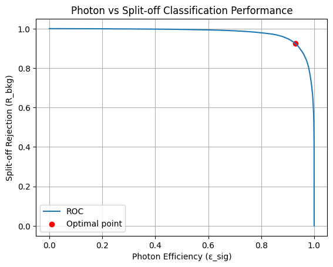
Plot FoM and purity vs threshold
plt.figure()
plt.plot(opt["curve"]["thresholds"], opt["curve"]["FoM"],
label=r"$S/\sqrt{S+B}$")
plt.plot(opt["curve"]["thresholds"], opt["curve"]["purity"],
label="Purity")
plt.axvline(opt["threshold"],
color="r",
ls="--",
label=f"Opt thr={opt['threshold']:.3f}")
plt.xlabel("Threshold on P(photon)")
plt.ylabel("Metric value")
plt.legend()
plt.grid(True)
plt.show()
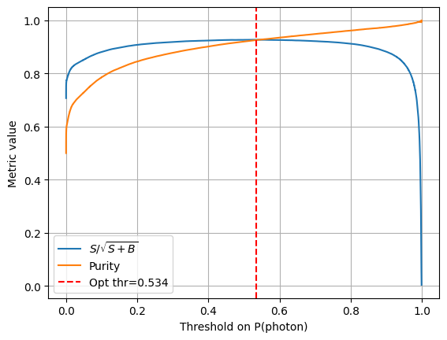
Energy-dependent Performance
EBins = [0.100, 0.500, 1.0, 2.0, 4.0]
test_acc, test_auc, y_true, y_prob, showerE = evaluate_gnn(
model,
test_loader,
desc="Test",
returnShowerE=True
)
from sklearn.metrics import roc_auc_score, accuracy_score
def metrics_vs_energy(y_true, y_prob, showerE, EBins):
"""
Compute accuracy and AUC vs shower energy bins.
"""
EBins = np.asarray(EBins)
labels = [f"[{EBins[i]:.1f}, {EBins[i+1]:.1f})" for i in range(len(EBins)-1)]
results = []
for i in range(len(EBins)-1):
mask = (showerE >= EBins[i]) & (showerE < EBins[i+1])
if not np.any(mask):
results.append((labels[i], np.nan, np.nan, np.sum(mask)))
continue
yt = y_true[mask]
yp = y_prob[mask]
acc = accuracy_score(yt, yp >= 0.5)
auc = roc_auc_score(yt, yp) if np.unique(yt).size > 1 else np.nan
results.append((labels[i], acc, auc, np.sum(mask)))
return results
bin_results = metrics_vs_energy(y_true, y_prob, showerE, EBins)
print(f"{'E_bin':<15}{'Acc':>10}{'AUC':>10}{'Nevents':>10}")
for label, acc_b, auc_b, n in bin_results:
print(f"{label:<15}{acc_b:10.3f}{auc_b:10.3f}{n:10d}")
E_bin Acc AUC Nevents
[0.1, 0.5) 0.889 0.917 46603
[0.5, 1.0) 0.864 0.912 13455
[1.0, 2.0) 0.943 0.905 19009
[2.0, 4.0) 0.983 0.892 32519
import numpy as np
import matplotlib.pyplot as plt
centers = 0.5 * (np.arange(1, len(EBins)))
print (centers)
width = 0.15 # bar width
accs = [r[1] for r in bin_results]
aucs = [r[2] for r in bin_results]
plt.figure(figsize=(8,5))
# Horizontal offsets for each metric
plt.bar(centers - 1.5*width, accs, width, label="Accuracy")
plt.bar(centers - 0.5*width, aucs, width, label="AUC")
# Styling
plt.xlabel("Shower Energy [GeV]")
plt.ylabel("Metric Value")
plt.title("Classifier Performance vs. FCAL Shower Energy")
plt.xticks(centers - 0.15, [f"[{EBins[i]:.1f},{EBins[i+1]:.1f}) [GeV]" for i in range(len(EBins)-1)])
plt.ylim(0, 1.05)
plt.legend(frameon=False)
plt.grid(axis="y", linestyle="--", alpha=0.5)
plt.tight_layout()
plt.show()
[0.5 1. 1.5 2. ]
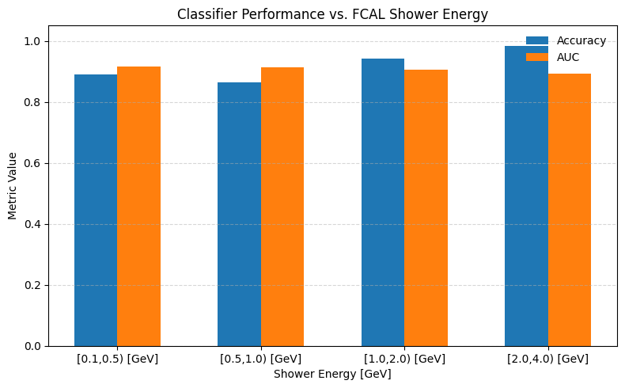
5. Physics Analysis#
Inference on Physics Events#
unformatted_omega_data_url = "https://huggingface.co/datasets/AI4EIC/DNP2025-tutorial/resolve/main/unformatted_dataset/OmegaExclusive_100k.root"
omega_dataset_path = download(unformatted_omega_data_url, data_dir)
⬇️ Downloading OmegaExclusive_100k.root from https://huggingface.co/datasets/AI4EIC/DNP2025-tutorial/resolve/main/unformatted_dataset/OmegaExclusive_100k.root
OmegaExclusive_100k.root: 86.0MB [00:02, 34.0MB/s]
✅ Download complete: data/OmegaExclusive_100k.root
# --- ω physics-events analysis with your trained SmallGNN on UNFORMATTED ROOT ---
import uproot, awkward as ak, numpy as np
import torch
from torch_geometric.data import Data
from itertools import combinations
from tqdm import tqdm
import matplotlib.pyplot as plt
# ======================
# Assumptions from above
# ======================
# - model : trained SmallGNN
# - DEVICE : "cuda"/"cpu"
# - shower_to_graph(), build_edges_8n(), logE_norm() already defined exactly as in your training code
# - omega_dataset_path points to OmegaExclusive_100k.root
PI0_MASS = 0.1349768 # GeV
FCAL_NROW, FCAL_NCOL = 59, 59
# -------------------------
# Helpers: TLorentzVector IO
# -------------------------
import numpy as np
import awkward as ak
def _to_numpy_scalar_or_array(x):
"""
Convert awkward/np/python scalar-or-array to numpy array or float.
"""
# If it's an awkward array/record field, convert to numpy
try:
return ak.to_numpy(x)
except Exception:
return np.asarray(x)
def _tlv_to_p4(rec):
"""
Robustly decode ROOT TLorentzVector as read by uproot/awkward.
Supports:
- TLorentzVector with top-level fields: fE, fP
where fP is either:
* a nested TVector3 record (fields fX,fY,fZ or X,Y,Z etc.)
* a length-3 array [px,py,pz]
Returns:
numpy array shape (4,) for scalars, or (...,4) for arrays
with ordering [px,py,pz,E]
"""
fields = set(getattr(rec, "fields", []))
if "fE" not in fields or "fP" not in fields:
raise RuntimeError(f"Expected TLorentzVector with fields fE and fP. Got fields: {sorted(list(fields))}")
E = _to_numpy_scalar_or_array(rec["fE"])
P = rec["fP"]
# Case A: fP is a nested record (TVector3-like)
p_fields = set(getattr(P, "fields", []))
# ROOT TVector3 commonly uses fX,fY,fZ (or sometimes X,Y,Z)
if {"fX", "fY", "fZ"}.issubset(p_fields):
px = _to_numpy_scalar_or_array(P["fX"])
py = _to_numpy_scalar_or_array(P["fY"])
pz = _to_numpy_scalar_or_array(P["fZ"])
elif {"X", "Y", "Z"}.issubset(p_fields):
px = _to_numpy_scalar_or_array(P["X"])
py = _to_numpy_scalar_or_array(P["Y"])
pz = _to_numpy_scalar_or_array(P["Z"])
elif {"x", "y", "z"}.issubset(p_fields):
px = _to_numpy_scalar_or_array(P["x"])
py = _to_numpy_scalar_or_array(P["y"])
pz = _to_numpy_scalar_or_array(P["z"])
else:
# Case B: fP is a numeric array of shape (...,3)
P_np = _to_numpy_scalar_or_array(P)
P_np = np.asarray(P_np)
if P_np.shape == (3,): # single vector
px, py, pz = P_np[0], P_np[1], P_np[2]
elif P_np.ndim >= 1 and P_np.shape[-1] == 3:
px, py, pz = np.moveaxis(P_np, -1, 0)
else:
raise RuntimeError(
"Could not decode TLorentzVector.fP as a TVector3 record or (...,3) array.\n"
f"Top fields: {sorted(list(fields))}\n"
f"fP fields: {sorted(list(p_fields)) if p_fields else 'None'}\n"
f"fP numpy shape: {getattr(P_np, 'shape', None)}"
)
# Stack to p4 = [px,py,pz,E] with broadcasting
px = np.asarray(px)
py = np.asarray(py)
pz = np.asarray(pz)
E = np.asarray(E)
# Ensure same shape via numpy broadcasting
p4 = np.stack([px, py, pz, E], axis=-1).astype(np.float32, copy=False)
return p4
def fourvec_mass(p4):
px, py, pz, E = np.moveaxis(p4, -1, 0)
m2 = E**2 - (px**2 + py**2 + pz**2)
m2 = np.maximum(m2, 0.0)
return np.sqrt(m2)
def combine_p4(p4a, p4b):
return p4a + p4b
# ---------------------------------------
# Derive isNearBorder from shower centroid
# ---------------------------------------
def infer_isNearBorder_from_hits(rows, cols, energies, margin=2, eps=1e-9):
if len(energies) == 0:
return True
Eraw = np.asarray(energies, dtype=np.float32)
rows = np.asarray(rows, dtype=np.float32)
cols = np.asarray(cols, dtype=np.float32)
Esum = float(Eraw.sum()) + eps
r_c = float((rows * Eraw).sum() / Esum)
c_c = float((cols * Eraw).sum() / Esum)
near = (
(r_c < margin) or (r_c > (FCAL_NROW - 1 - margin)) or
(c_c < margin) or (c_c > (FCAL_NCOL - 1 - margin))
)
return bool(near)
# -----------------------------------------
# Build one shower graph consistent w/ train
# -----------------------------------------
def omega_shower_to_graph(rows, cols, energies, showerE_scalar, numBlocks_scalar):
"""
Mirrors your training graph:
x: [row_n, col_n, E_logscaled, logEraw, Efrac, dx, dy, r] (8)
g: [showerE, numBlocks, isNearBorder] (3)
"""
rows = np.asarray(rows, dtype=np.int64)
cols = np.asarray(cols, dtype=np.int64)
Eraw = np.asarray(energies, dtype=np.float32)
if Eraw.size == 0:
return None
# same border proxy for g
near = infer_isNearBorder_from_hits(rows, cols, Eraw)
data = shower_to_graph(
rows, cols, Eraw,
showerE=float(showerE_scalar),
numBlocks=int(numBlocks_scalar),
isNearBorder=near
)
if data is None:
return None
# IMPORTANT: for your model, data.g must be 2D: (1,3)
data.g = torch.tensor([[float(showerE_scalar), float(numBlocks_scalar), float(near)]], dtype=torch.float32)
return data
# -------------------------
# GNN inference: one shower
# -------------------------
@torch.inference_mode()
def gnn_photon_prob_for_shower(model, data: Data, device: str):
"""
Returns P(photon) for a single shower graph.
"""
if data is None:
return 0.0
data = data.to(device)
# make a single-graph batch vector if missing
if not hasattr(data, "batch") or data.batch is None:
data.batch = torch.zeros(data.x.size(0), dtype=torch.long, device=device)
logits = model(data) # (1,2) or (B,2)
prob_photon = torch.softmax(logits, dim=1)[0, 1].item()
return float(prob_photon)
# -----------------------------
# Event-level ω reconstruction
# -----------------------------
def analyze_event_omega_gnn(ev, model, device, thr_photon=0.2, rect_mass_window=0.04):
"""
Modes:
- gnn : keep showers with P(photon) >= thr_photon
- rect : select pairs with |m(pi0)-m(pi0)| < rect_mass_window
- bench : all pairs
Returns dict of lists: (m_pi0, m_omega, weight)
"""
results = {"gnn": [], "rect": [], "bench": []}
# charged tracks (reconstructed)
p4_pi_plus = _tlv_to_p4(ev["thrownPiPlus"]) #in the other tutorial, used thrownPiPlus / used here reconPiPlus
p4_pi_minus = _tlv_to_p4(ev["thrownPiMinus"])
# showers p4 from FCAL neutral shower
shower_p4 = ev["shower_p4"] # (nShowers,4)
shower_hits = ev["shower_hits"] # list of per-shower (rows,cols,energies)
showerE_vec = ev["showerE"] # (nShowers,)
numBlocks_vec = ev["numBlocks"] # (nShowers,)
nShowers = int(ev["nShowers"])
if nShowers < 2:
return results
# --- per-shower GNN score
probs = []
for s in range(nShowers):
rows_s, cols_s, en_s = shower_hits[s]
data = omega_shower_to_graph(rows_s, cols_s, en_s, showerE_vec[s], numBlocks_vec[s])
p = gnn_photon_prob_for_shower(model, data, device)
probs.append(p)
good = [i for i, p in enumerate(probs) if p >= thr_photon]
pairs = list(combinations(range(nShowers), 2))
if not pairs:
return results
# --- bench (all)
for (i, j) in pairs:
p4_pi0 = combine_p4(shower_p4[i], shower_p4[j])
m_pi0 = float(fourvec_mass(p4_pi0))
p4_omega = combine_p4(p4_pi0, combine_p4(p4_pi_plus, p4_pi_minus))
m_omega = float(fourvec_mass(p4_omega))
results["bench"].append((m_pi0, m_omega, 1.0))
# --- rect: |m(pi0)-m0| cut
rect_pairs = []
for (i, j) in pairs:
m_pi0 = float(fourvec_mass(combine_p4(shower_p4[i], shower_p4[j])))
if abs(m_pi0 - PI0_MASS) < rect_mass_window:
rect_pairs.append((i, j))
if rect_pairs:
Nrect = len(rect_pairs)
for (i, j) in rect_pairs:
p4_pi0 = combine_p4(shower_p4[i], shower_p4[j])
m_pi0 = float(fourvec_mass(p4_pi0))
p4_omega = combine_p4(p4_pi0, combine_p4(p4_pi_plus, p4_pi_minus))
m_omega = float(fourvec_mass(p4_omega))
results["rect"].append((m_pi0, m_omega, 1.0 / Nrect))
# --- gnn: both showers pass threshold
gnn_pairs = [p for p in pairs if (p[0] in good and p[1] in good)]
if gnn_pairs:
N = len(gnn_pairs)
for (i, j) in gnn_pairs:
p4_pi0 = combine_p4(shower_p4[i], shower_p4[j])
m_pi0 = float(fourvec_mass(p4_pi0))
p4_omega = combine_p4(p4_pi0, combine_p4(p4_pi_plus, p4_pi_minus))
m_omega = float(fourvec_mass(p4_omega))
results["gnn"].append((m_pi0, m_omega, 1.0 / N))
return results, probs
# -------------------------
# Load ω tree + run analysis
# -------------------------
omega_tree = uproot.open(omega_dataset_path)["OmegaSampleTree"]
# NOTE: TLorentzVector branches are read as awkward records.
branches = [
"thrownPiPlus", "thrownPiMinus",
"reconPiPlus", "reconPiMinus",
"nShowers",
"rows", "cols", "energies",
"startIndexPerShower", "nHitsPerShower",
"showerE", "numBlocks",
"FCALNeutralShowerPx", "FCALNeutralShowerPy", "FCALNeutralShowerPz", "FCALNeutralShowerE",
]
arr = omega_tree.arrays(branches, library="ak")
Nevt = len(arr["nShowers"])
print("✅ Loaded ω events:", Nevt)
model = model.to(DEVICE).eval()
# Choose a *reasonable* default threshold for event-level selection.
# IMPORTANT: For event-level ω, thr=0.5 may be far too strict; start with 0.1–0.2 and scan later.
THR_PHOTON = 0.15
PI0_MASS_CUT = 0.04
all_results = {"bench": [], "rect": [], "gnn": []}
score_samples = []
for ievt in tqdm(range(Nevt), desc="Running ω-event inference (unformatted ROOT)"):
nShow = int(arr["nShowers"][ievt])
if nShow < 2:
continue
# Flattened hit arrays for the whole event
rows_evt = ak.to_numpy(arr["rows"][ievt]).astype(np.int64, copy=False)
cols_evt = ak.to_numpy(arr["cols"][ievt]).astype(np.int64, copy=False)
en_evt = ak.to_numpy(arr["energies"][ievt]).astype(np.float32, copy=False)
start = ak.to_numpy(arr["startIndexPerShower"][ievt]).astype(np.int64, copy=False)
nhits = ak.to_numpy(arr["nHitsPerShower"][ievt]).astype(np.int64, copy=False)
showerE_vec = ak.to_numpy(arr["showerE"][ievt]).astype(np.float32, copy=False)
numBlocks_vec = ak.to_numpy(arr["numBlocks"][ievt]).astype(np.int32, copy=False)
# Shower p4 directly from branches
px = ak.to_numpy(arr["FCALNeutralShowerPx"][ievt]).astype(np.float32, copy=False)
py = ak.to_numpy(arr["FCALNeutralShowerPy"][ievt]).astype(np.float32, copy=False)
pz = ak.to_numpy(arr["FCALNeutralShowerPz"][ievt]).astype(np.float32, copy=False)
E = ak.to_numpy(arr["FCALNeutralShowerE"][ievt]).astype(np.float32, copy=False)
shower_p4 = np.stack([px, py, pz, E], axis=1) # (nShowers,4)
# Per-shower hit slicing (rows/cols/energies)
shower_hits = []
for s in range(nShow):
a = int(start[s])
b = a + int(nhits[s])
shower_hits.append((rows_evt[a:b], cols_evt[a:b], en_evt[a:b]))
# Build event dict
ev = dict(
thrownPiPlus=arr["thrownPiPlus"][ievt],
thrownPiMinus=arr["thrownPiMinus"][ievt],
reconPiPlus=arr["reconPiPlus"][ievt],
reconPiMinus=arr["reconPiMinus"][ievt],
nShowers=nShow,
shower_p4=shower_p4,
shower_hits=shower_hits,
showerE=showerE_vec,
numBlocks=numBlocks_vec,
)
out, probs = analyze_event_omega_gnn(ev, model, DEVICE, thr_photon=THR_PHOTON, rect_mass_window=PI0_MASS_CUT)
for k in all_results:
all_results[k].extend(out[k])
# keep a small sample of scores for diagnostics
if len(score_samples) < 5000:
score_samples.extend(probs)
# -------------------------
# Print raw selection stats
# -------------------------
def _sumw(lst):
return float(np.sum([x[2] for x in lst])) if len(lst) else 0.0
print("\nRaw entry counts:")
for k in ["bench", "rect", "gnn"]:
print(f" {k:5s}: N={len(all_results[k]):8d} sum(weights)={_sumw(all_results[k]):.2f}")
# -------------------------
# Plot mass spectra overlays
# -------------------------
def plot_mass_spectrum(all_results, key="pi0", nbins=200, mass_range=(0.05, 0.30)):
plt.figure(figsize=(7,5))
for label in ["bench", "rect", "gnn"]:
masses = [m[0] if key=="pi0" else m[1] for m in all_results[label]]
weights = [m[2] for m in all_results[label]]
plt.hist(masses, bins=nbins, range=mass_range, histtype="step",
linewidth=1.8, label=label, weights=weights)
plt.xlabel(f"{key} mass [GeV]")
plt.ylabel("Weighted counts")
plt.title(f"{key} invariant mass")
plt.legend()
plt.grid(True, alpha=0.3)
plt.show()
plot_mass_spectrum(all_results, key="pi0", nbins=200, mass_range=(0.05, 0.30))
plot_mass_spectrum(all_results, key="omega", nbins=200, mass_range=(0.60, 1.00))
# -------------------------
# Diagnostic: score spectrum
# -------------------------
score_samples = np.asarray(score_samples, dtype=np.float32)
if score_samples.size:
print("\nGNN photon-score statistics (sampled showers):")
print(" mean:", float(score_samples.mean()))
print(" std :", float(score_samples.std()))
print(" min :", float(score_samples.min()))
print(" max :", float(score_samples.max()))
plt.figure(figsize=(7,4))
plt.hist(score_samples, bins=60, range=(0,1), histtype="step")
plt.xlabel("GNN photon probability")
plt.ylabel("Counts")
plt.title("Distribution of GNN photon scores (ω showers, sampled)")
plt.grid(True, alpha=0.3)
plt.show()
✅ Loaded ω events: 97525
Running ω-event inference (unformatted ROOT): 0%| | 0/97525 [00:00<?, ?it/s]/tmp/ipykernel_14068/1340404881.py:226: DeprecationWarning: Conversion of an array with ndim > 0 to a scalar is deprecated, and will error in future. Ensure you extract a single element from your array before performing this operation. (Deprecated NumPy 1.25.)
m_omega = float(fourvec_mass(p4_omega))
/tmp/ipykernel_14068/1340404881.py:241: DeprecationWarning: Conversion of an array with ndim > 0 to a scalar is deprecated, and will error in future. Ensure you extract a single element from your array before performing this operation. (Deprecated NumPy 1.25.)
m_omega = float(fourvec_mass(p4_omega))
/tmp/ipykernel_14068/1340404881.py:252: DeprecationWarning: Conversion of an array with ndim > 0 to a scalar is deprecated, and will error in future. Ensure you extract a single element from your array before performing this operation. (Deprecated NumPy 1.25.)
m_omega = float(fourvec_mass(p4_omega))
Running ω-event inference (unformatted ROOT): 100%|██████████| 97525/97525 [19:20<00:00, 84.00it/s]
Raw entry counts:
bench: N= 595673 sum(weights)=595673.00
rect : N= 104166 sum(weights)=68834.00
gnn : N= 100352 sum(weights)=68324.00
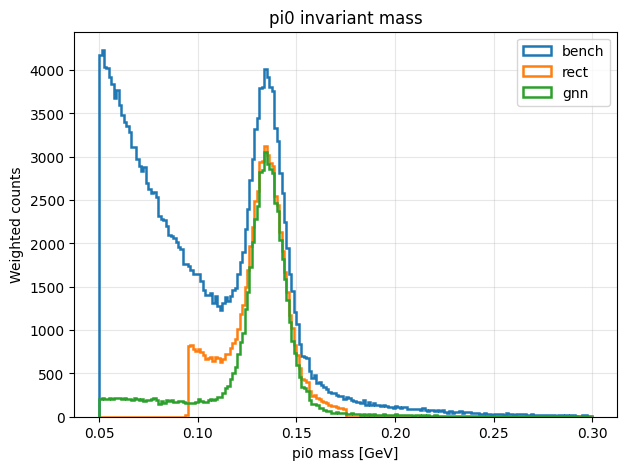
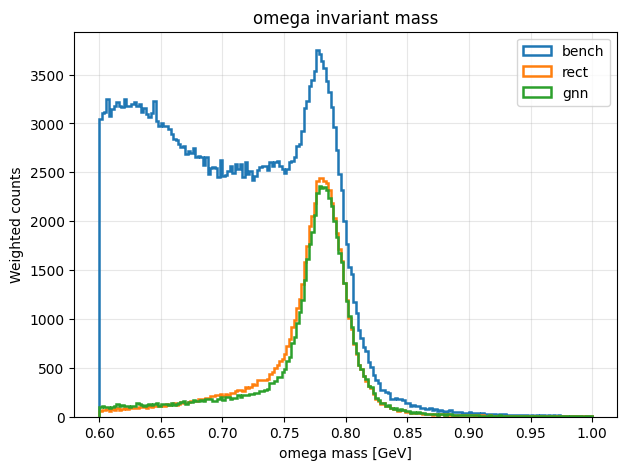
GNN photon-score statistics (sampled showers):
mean: 0.4355287253856659
std : 0.437677800655365
min : 9.766842716529833e-12
max : 0.9997170567512512
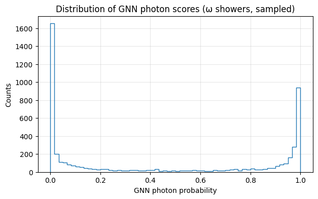
Note: The GNN-based photon identification achieves a performance comparable to (or slightly better than) the traditional π⁰ mass window selection. Importantly, the classifier relies solely on calorimeter shower topology and does not use the π⁰ invariant mass as an input. When applied to ω → π⁺π⁻π⁰ events, the GNN selection reproduces the expected π⁰ and ω mass peaks while significantly reducing combinatorial background relative to the inclusive benchmark
# --- Improved ω mass fits with proper weighted uncertainties + better background ---
%pip -q install scipy > /dev/null
import numpy as np
import matplotlib.pyplot as plt
from scipy.optimize import curve_fit
from scipy.special import wofz
from scipy.stats import chi2
# ------------------------
# Signal: Voigt (BW ⊗ Gauss)
# ------------------------
def voigt_pdf(x, A, m0, gamma, sigma):
"""
A = overall amplitude (not exactly yield unless integrated)
m0 = peak position
gamma = Lorentzian FWHM-ish parameter used as gamma in Voigt definition (GeV)
sigma = Gaussian sigma (GeV)
"""
z = ((x - m0) + 1j * gamma / 2.0) / (sigma * np.sqrt(2.0))
return A * np.real(wofz(z)) / (sigma * np.sqrt(2.0 * np.pi))
# ------------------------
# Background options
# ------------------------
def bkg_poly2(x, c0, c1, c2):
return c0 + c1*x + c2*(x**2)
def bkg_exp(x, c0, c1, c2):
# positive-ish exponential + offset: c0 + c1 * exp(c2 x)
return c0 + c1 * np.exp(c2 * x)
# Combined models
def model_voigt_poly2(x, A, m0, gamma, sigma, c0, c1, c2):
return voigt_pdf(x, A, m0, gamma, sigma) + bkg_poly2(x, c0, c1, c2)
def model_voigt_exp(x, A, m0, gamma, sigma, c0, c1, c2):
return voigt_pdf(x, A, m0, gamma, sigma) + bkg_exp(x, c0, c1, c2)
# ------------------------
# Histogram w/ proper weighted uncertainties
# ------------------------
def hist_w_sumw2(masses, weights, nbins, fit_range):
masses = np.asarray(masses, dtype=np.float64)
weights = np.ones_like(masses) if weights is None else np.asarray(weights, dtype=np.float64)
hist, bins = np.histogram(masses, bins=nbins, range=fit_range, weights=weights)
sumw2, _ = np.histogram(masses, bins=nbins, range=fit_range, weights=weights**2)
centers = 0.5*(bins[1:] + bins[:-1])
# sigma for weighted hist
sigma = np.sqrt(np.maximum(sumw2, 1e-12))
return hist, sigma, centers, bins
# ------------------------
# Fit driver
# ------------------------
def fit_omega_spectrum(masses, weights=None, label="sel",
nbins=120, fit_range=(0.72, 0.84),
bkg="poly2", min_rel_err=1e-6):
"""
bkg: "poly2" or "exp"
fit_range: recommend (0.72, 0.84) first; widen later if needed
"""
y, yerr, x, bins = hist_w_sumw2(masses, weights, nbins=nbins, fit_range=fit_range)
# Drop bins with ~0 uncertainty (can happen if no entries)
mask = yerr > (min_rel_err * np.max(yerr))
xfit, yfit, sfit = x[mask], y[mask], yerr[mask]
if xfit.size < 12:
raise RuntimeError(f"[{label}] Too few populated bins to fit. Try fewer bins or wider range.")
# Initial guesses (robust-ish)
A0 = float(np.max(yfit))
m00 = 0.782
gamma0 = 0.0085 # ~ ω natural width ~8.5 MeV
sigma0 = 0.012 # detector smearing guess (12 MeV)
# background init
c00 = float(np.median(yfit))
c10 = 0.0
c20 = 0.0
if bkg == "poly2":
f = model_voigt_poly2
p0 = [A0, m00, gamma0, sigma0, c00, c10, c20]
bounds = (
[0.0, 0.76, 0.001, 0.002, -np.inf, -np.inf, -np.inf],
[np.inf,0.80, 0.050, 0.050, np.inf, np.inf, np.inf],
)
elif bkg == "exp":
f = model_voigt_exp
# exp params: c0 + c1 exp(c2 x)
p0 = [A0, m00, gamma0, sigma0, c00, max(1.0, 0.1*c00), -5.0]
bounds = (
[0.0, 0.76, 0.001, 0.002, -np.inf, -np.inf, -50.0],
[np.inf,0.80, 0.050, 0.050, np.inf, np.inf, 50.0],
)
else:
raise ValueError("bkg must be 'poly2' or 'exp'")
popt, pcov = curve_fit(
f, xfit, yfit, p0=p0, bounds=bounds,
sigma=sfit, absolute_sigma=True, maxfev=40000
)
perr = np.sqrt(np.diag(pcov))
# Goodness-of-fit (using fit bins only)
ymodel = f(xfit, *popt)
chi2_val = np.sum(((yfit - ymodel)/sfit)**2)
ndf = xfit.size - len(popt)
pval = chi2.sf(chi2_val, max(ndf, 1))
# Yield = integral of signal component over fit range
xfine = np.linspace(fit_range[0], fit_range[1], 4000)
A, m0, gamma, sigma_g = popt[:4]
sig = voigt_pdf(xfine, A, m0, gamma, sigma_g)
yield_sig = np.trapz(sig, xfine)
return {
"label": label,
"bkg": bkg,
"fit_range": fit_range,
"nbins": nbins,
"popt": popt,
"perr": perr,
"pcov": pcov,
"chi2": float(chi2_val),
"ndf": int(ndf),
"pval": float(pval),
"yield": float(yield_sig),
"hist": y,
"err": yerr,
"centers": x,
"bins": bins,
"model_fn": f,
}
def plot_fit(result, alpha_data=0.25):
x = result["centers"]
y = result["hist"]
e = result["err"]
f = result["model_fn"]
popt = result["popt"]
bw = result["bins"][1] - result["bins"][0]
# show data with uncertainties (weighted)
plt.bar(x, y, width=bw, alpha=alpha_data, label=f"{result['label']} data")
plt.errorbar(x, y, yerr=e, fmt="none", capsize=0, alpha=0.6)
# smooth fit curve
xx = np.linspace(result["fit_range"][0], result["fit_range"][1], 2000)
plt.plot(xx, f(xx, *popt), lw=2, label=f"{result['label']} fit ({result['bkg']})")
# ------------------------
# Run on your selections: all_results must exist with keys "gnn","rect","bench"
# ------------------------
range_fit = (0.72, 0.84) # <-- start tight; if stable, expand later
nbins = 120
bkg_model = "poly2" # try "exp" if poly2 still struggles
m_gnn = [t[1] for t in all_results["gnn"]]
w_gnn = [t[2] for t in all_results["gnn"]]
m_rect = [t[1] for t in all_results["rect"]]
w_rect = [t[2] for t in all_results["rect"]]
fit_gnn = fit_omega_spectrum(m_gnn, w_gnn, label="GNN", nbins=nbins, fit_range=range_fit, bkg=bkg_model)
fit_rect = fit_omega_spectrum(m_rect, w_rect, label="Rectangular",nbins=nbins, fit_range=range_fit, bkg=bkg_model)
plt.figure(figsize=(9,5))
plot_fit(fit_rect)
plot_fit(fit_gnn)
plt.xlabel(r"$M_{\pi^+\pi^-\pi^0}$ [GeV]")
plt.ylabel("Weighted counts")
plt.title(r"$\omega(782)$ fits with weighted uncertainties (Voigt + improved background)")
plt.grid(alpha=0.3)
plt.legend()
plt.tight_layout()
plt.show()
def print_summary(res):
A,m0,gamma,sigma = res["popt"][:4]
dA,dm0,dg,ds = res["perr"][:4]
print(f"\n[{res['label']}] model=Voigt+{res['bkg']} range={res['fit_range']} nbins={res['nbins']}")
print(f" m0 = {m0:.6f} ± {dm0:.6f} GeV")
print(f" gamma = {gamma*1000:.2f} ± {dg*1000:.2f} MeV")
print(f" sigma = {sigma*1000:.2f} ± {ds*1000:.2f} MeV")
print(f" Yield = {res['yield']:.1f} (a.u., integral of signal in fit window)")
print(f" chi2/ndf = {res['chi2']:.1f} / {res['ndf']} = {res['chi2']/max(1,res['ndf']):.3f}")
print(f" p-value = {res['pval']:.3g}")
print_summary(fit_rect)
print_summary(fit_gnn)
/tmp/ipykernel_14068/746976919.py:121: DeprecationWarning: `trapz` is deprecated. Use `trapezoid` instead, or one of the numerical integration functions in `scipy.integrate`.
yield_sig = np.trapz(sig, xfine)
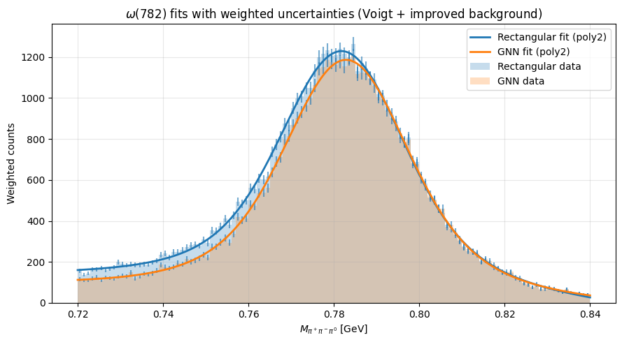
[Rectangular] model=Voigt+poly2 range=(0.72, 0.84) nbins=120
m0 = 0.781994 ± 0.000097 GeV
gamma = 19.31 ± 5.00 MeV
sigma = 10.31 ± 1.23 MeV
Yield = 49.9 (a.u., integral of signal in fit window)
chi2/ndf = 131.2 / 113 = 1.161
p-value = 0.116
[GNN] model=Voigt+poly2 range=(0.72, 0.84) nbins=120
m0 = 0.782977 ± 0.000098 GeV
gamma = 20.63 ± 4.63 MeV
sigma = 9.87 ± 1.19 MeV
Yield = 50.4 (a.u., integral of signal in fit window)
chi2/ndf = 94.3 / 113 = 0.835
p-value = 0.899
Meaning of the Voigt Fit Parameters#
The ω mass peak is modeled using a Voigt function, which is the convolution of a Breit–Wigner distribution (intrinsic particle width) and a Gaussian distribution (detector resolution).
Γ (Gamma) — Intrinsic decay width of the particle.
This is a physical property of the resonance related to its lifetime through
(\Gamma = \hbar / \tau).
For the ω meson, the natural width is about 8.5 MeV.σ (Sigma) — Detector resolution.
This represents the Gaussian smearing introduced by the detector and reconstruction, such as calorimeter energy resolution, tracking resolution, and π⁰ reconstruction uncertainties.
Interpretation of p-values in χ² goodness-of-fit tests#
If the model is correct and the uncertainties are correct, what is the probability of observing a χ² at least this large just from statistical fluctuations?
p-value range |
Interpretation |
|---|---|
p < 0.001 |
Model very unlikely to describe the data (fit clearly poor) |
0.001 – 0.01 |
Suspicious: model may be inadequate or uncertainties underestimated |
0.01 – 0.05 |
Borderline fit |
0.05 – 0.95 |
Acceptable / good fit |
p > 0.95 |
Residuals smaller than expected — uncertainties may be overestimated |